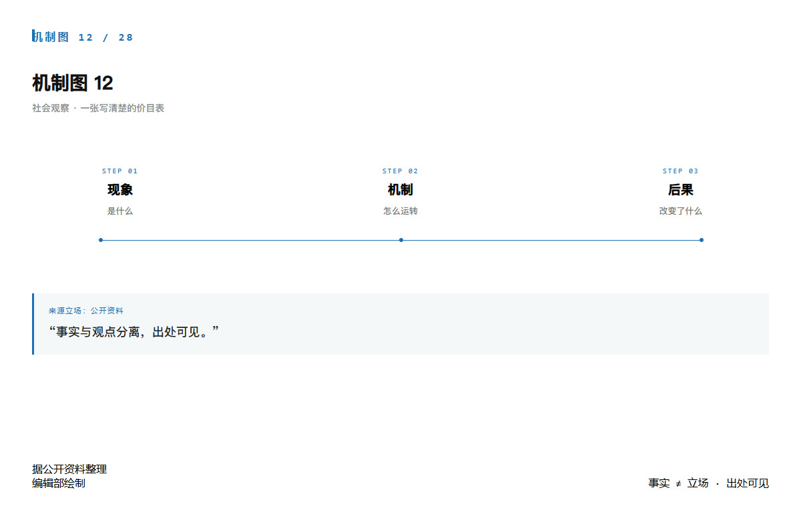

争议，被明码标了价
社会观察 · 一张写清楚的价目表
你花一个晚上写了条笔记，事实一条条核过，配图也调了色。发出去，阅读两位数。隔天刷到另一条，语气冲、漏洞多，评论区吵了三千楼。你盯着那个数字看了很久。
下面拆的是一套分发口径，不是给谁定罪。公式和权重来自公开的行业分析，平台没有逐项确认过细节，所以每条都标着「公开口径」。这里只写机制，不写恶，也不评价任何具体的人。
你以为你在分享生活，其实你的每次点赞、收藏、评论，都在被换算成分数。分数决定谁被看见。你不占这个便宜，不等于这套算法跟你无关。
业内通行的分析把小红书的推荐分发写成一个式子：CES =（点赞 + 收藏）× 1 +（评论 + 转发）× 4 + 关注 × 8。平台没有公开逐项确认，但公开口径里的权重结构，足以说明它鼓励什么。
看清楚权重：评论和转发的单价是点赞的四倍，关注是八倍。一条让人看一眼就划走的客观内容，和一条让人忍不住吵两句的争议内容，在这套计价里根本不是一个量级。
这不是谁在暗箱操作。单价写在公式里，对每种内容一视同仁。问题恰恰在这：它足够中性，中性到不需要偏袒谁，只要按算术走，结果就自然偏向能激起互动的那一类。
争议内容更容易触发评论和转发，这是结构性的，不是道德性的。你反驳它，贡献一次评论；你转发骂它，再贡献一次。它不需要你同意，只需要你坐不住。
有媒体评论说得很准：算法没有作恶的动机，但它创造了一个鼓励极端表达的环境，让「谁喊得大声谁有理」变成了事实上的社区法则。这话是媒体的立场，不是平台的自述，两边都记着。
上一代机制奖励音量，这一代奖励可争议性。最容易制造争议的表达，是把自己放在无可指摘的位置上——我是对的，且不需要解释。姿态越干净，越容易引来想反驳的人。
📌 一张值得抄下来的价目表
CES =（点赞 + 收藏）× 1 +（评论 + 转发）× 4 + 关注 × 8。评论的单价是点赞的四倍，关注是八倍。争议不是被谁偏袒，是被算术抬上去的。
媒体评论（新浪财经相关评论）
「算法没有作恶的动机，但它创造了一个鼓励极端表达的环境，让谁喊得大声谁有理变成了事实上的社区法则。」
据媒体评论，立场在媒体方，非平台方、也非当事方。机制批评与治理数据要分开看，另一面另说。

▲ CES 权重结构：争议为什么结构性占优（编辑部绘制）
当评论和转发最值钱，内容的命运就取决于它能不能引发动作，而不是它说得对不对。把自己摆成受害者或正确者，是引发动作最省力的办法——同情的人来声援，不同意的人来吵架，两头都算分。
反过来，先讲程序、再讲感受、把证据一条条摆齐的表达，在这套计价里是贬值资产。它让人点头，但不让人坐不住。持有这种表达方式的人不分性别，只是它恰好和某些叙事的处境重合。
这是重合，不是因果定论。谁都可能用这套姿态，也谁都可能被这套计价冷落。把它钉在某个群体名下，等于又找了一次替罪羊。
公式既然能被分析出来，就该能被官方说清楚。一句可核对的解释——「你的这篇为什么分发给这些人」——就够让用户对排序的信任，从信仰退回参考。
这不是要平台公开全部代码。只要把权重方向和处置口径讲明白，争议就有个能落在实处的战场，而不是各凭感觉互相扣帽子。能核对，才谈得上讨论。
✍️ 你有没有一条认真写的笔记，阅读量低得离谱？
是内容没被推，还是你后来也学会了换个写法？评论区说说。觉得有用，点个赞、点个「在看」。
下一篇：搜到的，就被当成真的。
参考
CES =（点赞 + 收藏）× 1 +（评论 + 转发）× 4 + 关注 × 8，据公开行业分析与运营研究的通行口径；平台未逐项确认公式细节，权重以「公开分析口径」标注。
新浪财经相关评论，据媒体评论，立场在媒体方。「结构性溢价」「姿态通货」为分析性归纳，非平台自述；治理数据另篇并陈。
社会观察，不站任何性别立场。只写分发机制，不写「恶」；用户结构只描述「谁在场上」，不推论「谁在作恶」。事实据公开来源，未证实指控不转述、不评价。拆解规则是为了理解，不是行动指南。